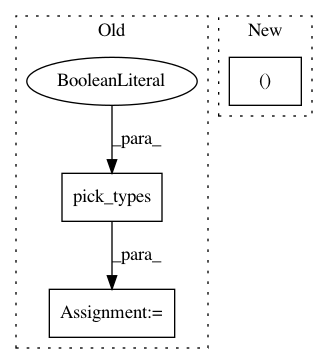

9f231cfa8416b5bfe06dc996fa6d50c87b488d37,examples/inverse/plot_multidict_reweighted_tfmxne.py,,,#,32
Before Change
epochs = mne.Epochs(raw, events, event_id, tmin, tmax, picks=picks,
reject=reject, preload=True)
evoked = epochs.filter(1, None).average()
evoked = evoked.pick_types(meg=True)
evoked.crop(tmin=0.008, tmax=0.2)
// Compute noise covariance matrix
cov = mne.compute_covariance(epochs, rank="info", tmax=0.)
After Change
events = mne.find_events(raw, stim_channel="STI 014")
reject = dict(grad=4000e-13, eog=350e-6)
event_id, tmin, tmax = dict(unknown=1), -0.5, 0.5
epochs = mne.Epochs(raw, events, event_id, tmin, tmax, reject=reject,
baseline=(None, 0))
evoked = epochs.average()
In pattern: SUPERPATTERN
Frequency: 3
Non-data size: 3
Instances
Project Name: mne-tools/mne-python
Commit Name: 9f231cfa8416b5bfe06dc996fa6d50c87b488d37
Time: 2021-01-07
Author: larson.eric.d@gmail.com
File Name: examples/inverse/plot_multidict_reweighted_tfmxne.py
Class Name:
Method Name:
Project Name: mne-tools/mne-python
Commit Name: 2dd49058dba6cf1527e2414221d4b08b127f96d5
Time: 2019-04-24
Author: larson.eric.d@gmail.com
File Name: mne/forward/forward.py
Class Name:
Method Name: _restrict_gain_matrix
Project Name: NeuroTechX/moabb
Commit Name: c52436b4ffbafb42d6e1daf99c7ac252181d27a5
Time: 2018-01-29
Author: vjayaram@danube.is.localnet
File Name: moabb/datasets/physionet_mi.py
Class Name: PhysionetMI
Method Name: _get_single_subject_data